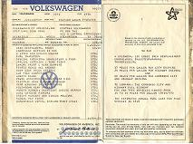

| General info
|
The Story
September 2003
On VWEuro I meet Bennie Kuiper and we talk about the weird M-code 'S765' that appears in the M-code list of the baywindow parts-microfiche. It reads 'Special Salescampaign (USA)'. Bennie says instantly "That must be the Champagne Edition bus!". He read on the Type2 mailinglist about someone who restored such a bus. A few days later Bennie sends me the URL to the Website of Dave C. Bolen and I get fascinated by this 'action model'. I decide that if there is one late baywindow I would ever want to add to my collection than this is the one!
April 2004
On the 5th of April the bus arrives in Flushing, The Netherlands. 9 Days
later, Wednesday the 14th, my father and I drive to the harbour with my
'82 Vanagon to pick it up.
The bus was built in april 1978 and then shipped to the USA. Where it entered the USA exactly is a unclear to me as the M-plate states it had the destination "Columbus via Baltimore" while the original receipt says "port of destination: Houston".
Click on the image below to view the receipt

The first owner bought the bus June the 6th, 1978 at Economy Cars Inc, Dallas, Texas. He sold it December 22nd, 2003. Here is an overview of the previous owners:
| owner | from | until | mileage | town | country |
| 1st | June 1st, 1978 | December 22nd, 2003 | 000025 | Dallas TX, later: Virginia Beach VA | United States |
| 2nd | December 22nd | February 18th, 2004 | 129705 | Virginia Beach VA | United States |
| 3rd | February 18th, 2004 | - now - | 129706 | Leeuwarden | The Netherlands |
The Champagne
Edition II package
The special interior and the striping on this bus are part of the Champagne
Edition II ('CEII') package (the thin white stripes were added
by the first owner I think). The CEII buses came in a 7-seater microbus
version and as a Deluxe Westfalia Campmobile. The Campmobile has a totally
diffferent look than the microbus. The only similarities are certain optional
extra's, and the 'Saddle Brown' colored parts that were used such as the
dashboard unit.
|
|
||||||||||||||||||||||||||||||||||||||||||
Champagne Edition links
[top]
Dave C. Bolen http://www.shockwaverider.com/78buspre/
pictures of his bus before restoration http://www.shockwaverider.com/newengine/
pictures of the new engine http://www.shockwaverider.com/newbus/ pictures of the bus after restoration Brochure http://www.72camper.com/champagne.htm
C.E. II brochure
| Last update: april 21st, 2004 Copyright © Vincent Molenaar molenari@hotmail.com |
DISCLAIMER | Vincenzo's
Volkswagen Vans |
{kind=link}
{kind=link}
{kind=link}
{kind=link}
{kind=link}
{kind=link}
{kind=link}
{kind=link}
{kind=link}
{kind=link}
{kind=link}
{kind=link}
{kind=link}